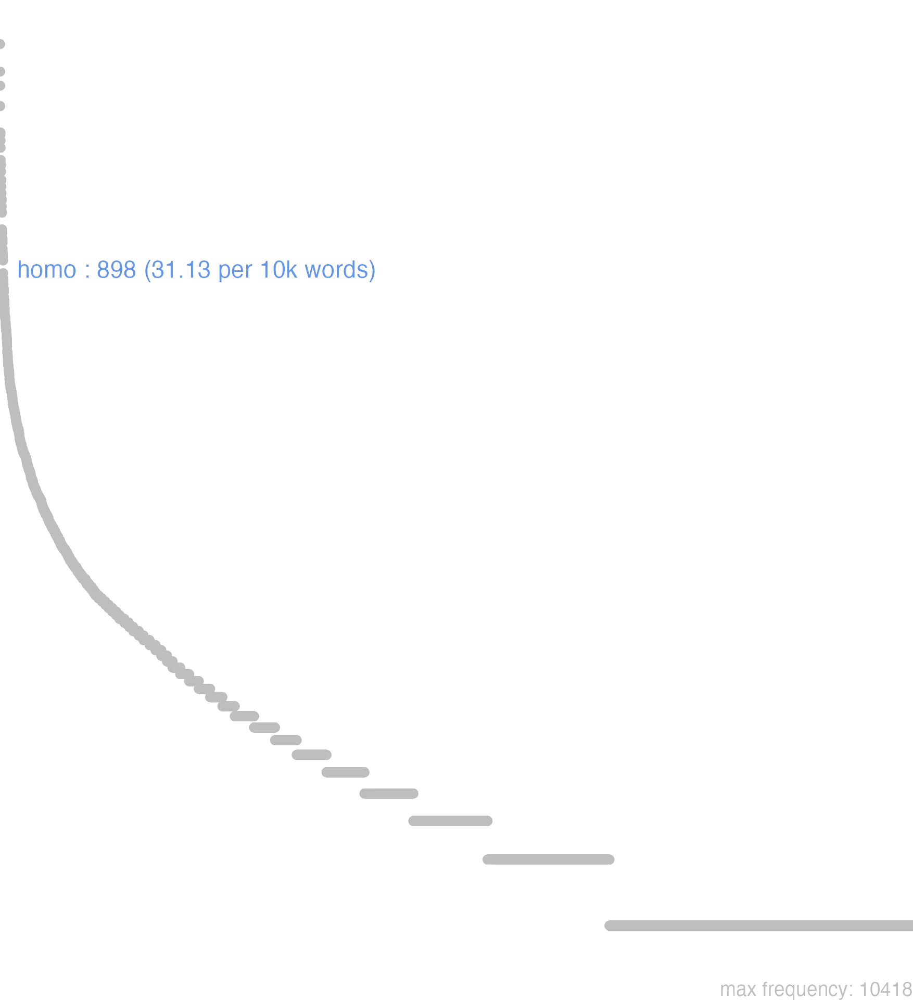

69 homo
69.0.0.1 bases lexicais
id: http://lila-erc.eu/data/id/lemma/105624
classe: substantivo masculino
paradigma: 3ª declinação (sem vogal temática)
outras grafias:
variantes do lema:
no data
hŏmō
hŏmĭnis
69.0.0.2 dicionários tradicionais
homō -ĭnis
subs. m.
Obs.: 1 Etimologicamente significa: o nascido da terra, o terrestre, ser humano; deste sent. geral é que passou aos sents. particulares acima indicados. 2 Na língua familiar tem, muitas vezes, o valor de um demonstrativo, correspondendo a hic homo = ego Plaut. Bac. 161; homo = is. iste ou ille Cie. Dom. 40.
subs. m.
Obs.: 1 Etimologicamente significa: o nascido da terra, o terrestre, ser humano; deste sent. geral é que passou aos sents. particulares acima indicados. 2 Na língua familiar tem, muitas vezes, o valor de um demonstrativo, correspondendo a hic homo = ego Plaut. Bac. 161; homo = is. iste ou ille Cie. Dom. 40.
1 Sent. próprio Homem, ser racional em oposição a fera, bestia Cíc. At. 2, 2, 2.
2 Sent. próprio Homem, ser humano em oposição a deus Cíc. Oro 129.
3 Na língua familiar: Homem em oposição a mulier Plaut. Cisto 723
4 Na língua familiar: Homem, ser vivo, vivente, mortal em oposição aos deuses e aos mortos Cíc. Amer. 76.
5 Por extensão, no pl.: Habitantes, cidadãos T. Lív. 34, 45, I.
6 Por extensão, no pl.: Homens, soldados, e especialmente a infantaria em oposição à cavalaria Cés. B. Civ. 2, 39, 4.
no data
Homo -inis
1 m. Cic. homem.
2 Plaut. f. mulher.
[EXEMPLOS]
X
homo ita est Ter Elle he deste humor, tal he o seu genio
homo meus Cic O meu criado ou domestico
homo nata erat Serv. Sulp. ad Cic Havia nascido mortal, ou sujeita á condiçao humana
homo nemo est Plaut Não ha ninguem
paucorum hominum est Hor He retirado, e de pouca communicação
quid hominis es? Ter Que qualidade de homem es?
Homo -inis
masc.
masc.
1 homem, ou mulher
Homo inis
1 ho homem
69.0.0.3 dados de corpus
![This chart plots collocate by scoreSUBST, for the headword homo here are all the values plotted: collocate: genus; scoreSUBST: 3. collocate: mille; scoreSUBST: 0. collocate: perditus; scoreSUBST: 0. collocate: nobilis; scoreSUBST: 0. collocate: honestus; scoreSUBST: 0. collocate: memoria; scoreSUBST: 2. collocate: occido; scoreSUBST: 0. collocate: atque; scoreSUBST: 0. collocate: multitudo; scoreSUBST: 2. collocate: certus; scoreSUBST: 0. collocate: sapiens2; scoreSUBST: 0. collocate: numerus; scoreSUBST: 2. collocate: uideo; scoreSUBST: 0. collocate: deus; scoreSUBST: 2. collocate: idem; scoreSUBST: 0. collocate: unus; scoreSUBST: 0. collocate: post; scoreSUBST: 0. collocate: doctus; scoreSUBST: 0. collocate: audax; scoreSUBST: 0. collocate: nouus; scoreSUBST: 0. collocate: fama; scoreSUBST: 2. collocate: natura; scoreSUBST: 2. collocate: ordo; scoreSUBST: 2. collocate: mos; scoreSUBST: 2. collocate: grauis; scoreSUBST: 0. collocate: amens; scoreSUBST: 0. collocate: sceleratus; scoreSUBST: 0. collocate: ferus; scoreSUBST: 0. collocate: improbus; scoreSUBST: 0. collocate: ingenium; scoreSUBST: 2. collocate: existimatio; scoreSUBST: 2. collocate: circiter; scoreSUBST: 0. collocate: armatus; scoreSUBST: 0. collocate: graecus; scoreSUBST: 0. collocate: sancitus; scoreSUBST: 0. collocate: ample; scoreSUBST: 0. collocate: inuitus; scoreSUBST: 0. collocate: potens; scoreSUBST: 0. collocate: consularis; scoreSUBST: 0](./Media/wordcloud__xx104-111-109-111xx__BY_collocate_scoreSUBST.webp)
![This chart plots collocate by scoreADJ, for the headword homo here are all the values plotted: collocate: genus; scoreADJ: 0. collocate: mille; scoreADJ: 0. collocate: perditus; scoreADJ: 3. collocate: nobilis; scoreADJ: 3. collocate: honestus; scoreADJ: 2. collocate: memoria; scoreADJ: 0. collocate: occido; scoreADJ: 0. collocate: atque; scoreADJ: 0. collocate: multitudo; scoreADJ: 0. collocate: certus; scoreADJ: 2. collocate: sapiens2; scoreADJ: 2. collocate: numerus; scoreADJ: 0. collocate: uideo; scoreADJ: 0. collocate: deus; scoreADJ: 0. collocate: idem; scoreADJ: 0. collocate: unus; scoreADJ: 0. collocate: post; scoreADJ: 0. collocate: doctus; scoreADJ: 2. collocate: audax; scoreADJ: 2. collocate: nouus; scoreADJ: 2. collocate: fama; scoreADJ: 0. collocate: natura; scoreADJ: 0. collocate: ordo; scoreADJ: 0. collocate: mos; scoreADJ: 0. collocate: grauis; scoreADJ: 2. collocate: amens; scoreADJ: 2. collocate: sceleratus; scoreADJ: 2. collocate: ferus; scoreADJ: 2. collocate: improbus; scoreADJ: 2. collocate: ingenium; scoreADJ: 0. collocate: existimatio; scoreADJ: 0. collocate: circiter; scoreADJ: 0. collocate: armatus; scoreADJ: 2. collocate: graecus; scoreADJ: 2. collocate: sancitus; scoreADJ: 2. collocate: ample; scoreADJ: 0. collocate: inuitus; scoreADJ: 2. collocate: potens; scoreADJ: 2. collocate: consularis; scoreADJ: 2](./Media/wordcloud__xx104-111-109-111xx__BY_collocate_scoreADJ.webp)
![This chart plots collocate by scoreVERBO, for the headword homo here are all the values plotted: collocate: genus; scoreVERBO: 0. collocate: mille; scoreVERBO: 0. collocate: perditus; scoreVERBO: 0. collocate: nobilis; scoreVERBO: 0. collocate: honestus; scoreVERBO: 0. collocate: memoria; scoreVERBO: 0. collocate: occido; scoreVERBO: 2. collocate: atque; scoreVERBO: 0. collocate: multitudo; scoreVERBO: 0. collocate: certus; scoreVERBO: 0. collocate: sapiens2; scoreVERBO: 0. collocate: numerus; scoreVERBO: 0. collocate: uideo; scoreVERBO: 1. collocate: deus; scoreVERBO: 0. collocate: idem; scoreVERBO: 0. collocate: unus; scoreVERBO: 0. collocate: post; scoreVERBO: 0. collocate: doctus; scoreVERBO: 0. collocate: audax; scoreVERBO: 0. collocate: nouus; scoreVERBO: 0. collocate: fama; scoreVERBO: 0. collocate: natura; scoreVERBO: 0. collocate: ordo; scoreVERBO: 0. collocate: mos; scoreVERBO: 0. collocate: grauis; scoreVERBO: 0. collocate: amens; scoreVERBO: 0. collocate: sceleratus; scoreVERBO: 0. collocate: ferus; scoreVERBO: 0. collocate: improbus; scoreVERBO: 0. collocate: ingenium; scoreVERBO: 0. collocate: existimatio; scoreVERBO: 0. collocate: circiter; scoreVERBO: 0. collocate: armatus; scoreVERBO: 0. collocate: graecus; scoreVERBO: 0. collocate: sancitus; scoreVERBO: 0. collocate: ample; scoreVERBO: 0. collocate: inuitus; scoreVERBO: 0. collocate: potens; scoreVERBO: 0. collocate: consularis; scoreVERBO: 0](./Media/wordcloud__xx104-111-109-111xx__BY_collocate_scoreVERBO.webp)
![This chart plots collocate by scoreADV, for the headword homo here are all the values plotted: collocate: genus; scoreADV: 0. collocate: mille; scoreADV: 0. collocate: perditus; scoreADV: 0. collocate: nobilis; scoreADV: 0. collocate: honestus; scoreADV: 0. collocate: memoria; scoreADV: 0. collocate: occido; scoreADV: 0. collocate: atque; scoreADV: 0. collocate: multitudo; scoreADV: 0. collocate: certus; scoreADV: 0. collocate: sapiens2; scoreADV: 0. collocate: numerus; scoreADV: 0. collocate: uideo; scoreADV: 0. collocate: deus; scoreADV: 0. collocate: idem; scoreADV: 0. collocate: unus; scoreADV: 0. collocate: post; scoreADV: 0. collocate: doctus; scoreADV: 0. collocate: audax; scoreADV: 0. collocate: nouus; scoreADV: 0. collocate: fama; scoreADV: 0. collocate: natura; scoreADV: 0. collocate: ordo; scoreADV: 0. collocate: mos; scoreADV: 0. collocate: grauis; scoreADV: 0. collocate: amens; scoreADV: 0. collocate: sceleratus; scoreADV: 0. collocate: ferus; scoreADV: 0. collocate: improbus; scoreADV: 0. collocate: ingenium; scoreADV: 0. collocate: existimatio; scoreADV: 0. collocate: circiter; scoreADV: 2. collocate: armatus; scoreADV: 0. collocate: graecus; scoreADV: 0. collocate: sancitus; scoreADV: 0. collocate: ample; scoreADV: 2. collocate: inuitus; scoreADV: 0. collocate: potens; scoreADV: 0. collocate: consularis; scoreADV: 0](./Media/wordcloud__xx104-111-109-111xx__BY_collocate_scoreADV.webp)
![This chart plots collocate by scoreFUNC, for the headword homo here are all the values plotted: collocate: genus; scoreFUNC: 0. collocate: mille; scoreFUNC: 0. collocate: perditus; scoreFUNC: 0. collocate: nobilis; scoreFUNC: 0. collocate: honestus; scoreFUNC: 0. collocate: memoria; scoreFUNC: 0. collocate: occido; scoreFUNC: 0. collocate: atque; scoreFUNC: 0. collocate: multitudo; scoreFUNC: 0. collocate: certus; scoreFUNC: 0. collocate: sapiens2; scoreFUNC: 0. collocate: numerus; scoreFUNC: 0. collocate: uideo; scoreFUNC: 0. collocate: deus; scoreFUNC: 0. collocate: idem; scoreFUNC: 0. collocate: unus; scoreFUNC: 0. collocate: post; scoreFUNC: 20. collocate: doctus; scoreFUNC: 0. collocate: audax; scoreFUNC: 0. collocate: nouus; scoreFUNC: 0. collocate: fama; scoreFUNC: 0. collocate: natura; scoreFUNC: 0. collocate: ordo; scoreFUNC: 0. collocate: mos; scoreFUNC: 0. collocate: grauis; scoreFUNC: 0. collocate: amens; scoreFUNC: 0. collocate: sceleratus; scoreFUNC: 0. collocate: ferus; scoreFUNC: 0. collocate: improbus; scoreFUNC: 0. collocate: ingenium; scoreFUNC: 0. collocate: existimatio; scoreFUNC: 0. collocate: circiter; scoreFUNC: 0. collocate: armatus; scoreFUNC: 0. collocate: graecus; scoreFUNC: 0. collocate: sancitus; scoreFUNC: 0. collocate: ample; scoreFUNC: 0. collocate: inuitus; scoreFUNC: 0. collocate: potens; scoreFUNC: 0. collocate: consularis; scoreFUNC: 0](./Media/wordcloud__xx104-111-109-111xx__BY_collocate_scoreFUNC.webp)
![This charts plots the frequency of lemma by author_Frequencies. The Hieronymus subcorpus registers the highest normalized frequency, with the value of 56.17 and an absolute frequency of 25. The Cicero subcorpus follows, with a normalized frequency of 38.75 and an absolute frequency of 622. the subcorpus with the least normalized frequency is Suetonius with the normalized value of 0 and an absolute freqeuncy of 0. here are all the values: subcorpus: Caesar ; normalized frequency: 64 ; absolute frequency: 24.1710098950072. subcorpus: Cicero ; normalized frequency: 622 ; absolute frequency: 38.7480999725898. subcorpus: Horatius ; normalized frequency: 15 ; absolute frequency: 13.3203090311695. subcorpus: Ovidius ; normalized frequency: 3 ; absolute frequency: 5.14756348661633. subcorpus: Phaedrus ; normalized frequency: 19 ; absolute frequency: 28.8446940944284. subcorpus: Sallustius ; normalized frequency: 37 ; absolute frequency: 34.3196363973657. subcorpus: Seneca ; normalized frequency: 103 ; absolute frequency: 19.223232115862. subcorpus: Suetonius ; normalized frequency: 0 ; absolute frequency: 0. subcorpus: Tacitus ; normalized frequency: 2 ; absolute frequency: 6.86577411603158. subcorpus: Vergilius ; normalized frequency: 8 ; absolute frequency: 15.4440154440154. subcorpus: Hieronymus ; normalized frequency: 25 ; absolute frequency: 56.1671534486632](./Media/barchart__xx104-111-109-111xx__lemma_BY_author_Frequencies.webp)
![This charts plots the frequency of lemma by genre_Frequencies. The Prosa.ficcional subcorpus registers the highest normalized frequency, with the value of 56.17 and an absolute frequency of 25. The Prosa.oratória subcorpus follows, with a normalized frequency of 45.03 and an absolute frequency of 469. the subcorpus with the least normalized frequency is Poesia.trágica with the normalized value of 0 and an absolute freqeuncy of 0. here are all the values: subcorpus: Prosa.histórica ; normalized frequency: 103 ; absolute frequency: 25.0736385987974. subcorpus: Prosa.filosófica ; normalized frequency: 150 ; absolute frequency: 24.7112897645838. subcorpus: Prosa.oratória ; normalized frequency: 469 ; absolute frequency: 45.0299079239196. subcorpus: Prosa.epistolográfica ; normalized frequency: 106 ; absolute frequency: 28.0876546808341. subcorpus: Poesia.lírica ; normalized frequency: 16 ; absolute frequency: 13.460082443005. subcorpus: Poesia.didática ; normalized frequency: 21 ; absolute frequency: 17.8132157095598. subcorpus: Poesia.trágica ; normalized frequency: 0 ; absolute frequency: 0. subcorpus: Poesia.épica ; normalized frequency: 8 ; absolute frequency: 15.4440154440154. subcorpus: Prosa.ficcional ; normalized frequency: 25 ; absolute frequency: 56.1671534486632](./Media/barchart__xx104-111-109-111xx__lemma_BY_genre_Frequencies.webp)
![This charts plots the frequency of lemma by period_Frequencies. The IV.d.C. subcorpus registers the highest normalized frequency, with the value of 56.17 and an absolute frequency of 25. The I.a.C. subcorpus follows, with a normalized frequency of 34.77 and an absolute frequency of 747. the subcorpus with the least normalized frequency is II.d.C. with the normalized value of 5.24 and an absolute freqeuncy of 2. here are all the values: subcorpus: I.a.C. ; normalized frequency: 747 ; absolute frequency: 34.7684430998371. subcorpus: I.d.C. ; normalized frequency: 124 ; absolute frequency: 18.968945999694. subcorpus: II.d.C. ; normalized frequency: 2 ; absolute frequency: 5.23560209424084. subcorpus: IV.d.C. ; normalized frequency: 25 ; absolute frequency: 56.1671534486632](./Media/barchart__xx104-111-109-111xx__lemma_BY_period_Frequencies.webp)
pro deum hominumque fidem
Cic.Ver.2.4.7.6
Pela fé dos deuses e dos homens! [JDD]
non vidisti igitur hominem
Cic.Att.5.2.2
“Não viste então o homem?” [JDD, de outra edição]
video hominem valde petiturire
Cic.Att.1.14.7
Vejo que o homem vai se lançar com força como candidado. [JDD]
videbis ergo hominem si voles
Cic.Att.4.12.1
Portanto, verás o homem, se quiseres. [JDD]
eos concludit magnam hominum multitudinem
Cic.Ver.2.4.54.9
Encerra-os: uma grande multidão de homens. [JDD]
magnam rem puta unum hominem agere
Sen.Ep.120.22
Considera uma grande coisa agir como um único homem. [JDD]
praeclarum responsum et docto homine dignum
Cic.Sen.13
Resposta brilhante e digna de um homem douto. [JDD]
nunc homo audacissimus atque amentissimus hoc cogitat
Cic.Ver.1.7
7 Agora esse homem ousadíssimo e completamente louco maquina isto. [JDD]
quod naturae satis est homini non est
Sen.Ep.119.7
O que é suficiente para a natureza, não o é para o homem. [JDD]
nullo genere homines mollius moriuntur sed nec diutius
Sen.Ep.30.4
De nenhum outro modo os homens morrem mais docemente, mas nem com mais lentidão. [JDD]
paucis diebus habebam certos homines quibus darem litteras
Cic.Att.5.17.1
Em poucos dias eu tinha homens certos aos quais entregaria a carta. [JDD]
hoc quanti putas esse ad famam hominum ac uoluntatem
Cic.Mur.38
Quanto achas que isso vale para a fama e disposição favorável dos homens? [JDD]
in unius hominis perditi iudicio plures similes reperti sunt
Cic.Att.1.16.9
No julgamento de um único homem devasso, foram encontrados muitos iguais a ele.” [JDD]
venite post me et faciam vos fieri piscatores hominum
Vulg.Marc.1.17
Vinde atrás de mim e eu farei que vós vos torneis pescadores de homens. [JDD]
quam multis istum putatis hominibus honestis de digitis anulos abstulisse
Cic.Ver.2.4.57.11
De quantos homens honrados julgais que esse sujeito tirou dos dedos os anéis? [JDD]
iste homo non est unus e populo ad salutem spectat
Sen.Ep.10.3
esse homem não é mais um do povo, olha para a sua salvação.” [JDD]
occisis ad hominum milibus quattuor reliqui in oppidum reiecti sunt
Caes.Gal.2.33.5
Mortos uns quatro mil homens, os restantes foram rechaçados para a cidadela. [JDD]
nuper homines nobilis eius modi iudices sed quid dico nuper
Cic.Ver.2.4.6.6
Recentemente, juízes, (mas por que digo “recentemente”? - [JDD]
quamquam o di boni quid est in hominis natura diu
Cic.Sen.69
Aliás, ó deuses bons! o que é longo tempo na natureza dos homem? [JDD]
remoue existimationem hominum dubia semper est et in partem utramque diuiditur
Sen.Ep.26.6
Deixa de lado a opinião dos homens: é sempre dúbia e se divide para um lado e para o outro. [JDD]
iam ad certas res conficiendas certos homines delectos ac descriptos habebat
Cic.Catil.3.16.12
Tinha já para levar a cabo determinadas coisas determinados homens escolhidos e designados. [JDD]
et patrimonium habebat libertini et ingenium numquam uidi hominem beatum indecentius
Sen.Ep.27.5
tinha tanto o patrimônio como o caráter de um liberto; nunca vi um homem mais indecentemente feliz. [JDD]
nota tibi est hominis probitas C. Caesar noti mores nota constantia
Cic.Deiot.16
Te é conhecida, Caio César, a probidade desse homem, conhecidos os costumes, conhecida a constância. [JDD]
idem Satellius illum hortari coepit ut luctaretur hominem aegrum pallidum gracilem
Sen.Ep.27.8
O mesmo Satélio começou a exortá-lo a que ele, um homem doente, pálido, franzino, praticasse luta. [JDD]
quis M. Scaurum hominem grauissimum ciuem egregium fortissimum senatorem a Q. Maximo
Cic.Mur.36
Quem [pensou] que Marco Escauro, homem seriíssimo, notável cidadão, valorosíssimo senador, [pudesse ser vencido] por Quinto Máximo? [JDD]
quid autem acerbum aut nimis graue est in homines tanti facinoris conuictos
Sal.Cat.51.23
Mas o que é terrível ou demasiadamente grave contra homens convictos de tão enorme crime? [JDD]
utebatur hominibus improbis multis et quidem optimis se uiris deditum esse simulabat
Cic.Cael.12
Relacionava-se com muitas pessoas más; e, na verdade, fingia que era dedicado aos melhores homens. [JDD]
ab his ergo inuiti homines recedunt et mercedem miseriarum amant ipsas execrantur
Sen.Ep.22.9
Destas coisas os homens se retiram contra a vontade e amam a recompensa das misérias, elas próprias são execradas. [JDD]
armatis hominibus ante diem tertium Nonas Novembris expulsi sunt fabri de area nostra
Cic.Att.4.3.2
No terceiro dia antes das nonas de novembro [3 de novembro], com a intervenção de homens armados, foram expulsos de minha área os operários. [JDD, de outra edição]
ex eo proelio circiter milia hominum CXXX superfuerunt eaque tota nocte continenter ierunt
Caes.Gal.1.26.5
Dessa batalha restaram cerca de 130 mil homens e por toda essa noite eles marcharam sem parar. [JDD]
qui ager ut dena iugera sint non amplius homines quinque milia potest sustinere
Cic.Att.2.16.1
e este território, se os lotes são de dez jeiras, não pode suportar mais do que cinco mil homens. [JDD, de outra edição]
an hic si sese isti uitae dedidisset consularem hominem admodum adulescens in iudicium uocauisset
Cic.Cael.47
Por acaso este, se tivesse se dedicado a essa vida, teria, ainda muito jovem, chamado em juízo um ex-cônsul? [JDD]
cum illi orbe facto sese defenderent celeriter ad clamorem hominum circiter milia sex conuenerunt
Caes.Gal.4.37.2
Como esses, feito um círculo, se defendiam, rapidamente ao clamor dos homens vieram juntar-se cerca de seis mil. [JDD]
in omni Gallia eorum hominum qui aliquo sunt numero atque honore genera sunt duo
Caes.Gal.6.13.1
Em toda Gália há duas classes desses homens que são de alguma importância e honra. [JDD]
itaque non ex sermone hominum recenti sed ex annalium uetustate eruenda memoria est nobilitatis tuae
Cic.Mur.16
E assim a memória de tua nobreza deve ser extraída não da conversação recente dos homens, mas da antiguidade dos anais. [JDD]
legatum ex suis sese magno cum periculo ad eum missurum et hominibus feris obiecturum existimabat
Caes.Gal.1.47.3
Ele estimava que com grande perigo enviaria um de seus embaixadores e o lançaria a homens ferozes. [JDD]
quod si id crimen homini nouo esse deberet profecto mihi neque inimici neque inuidi defuissent
Cic.Mur.17
E se isso devesse ser um crime para um homem novo, com certeza não me teriam faltado nem inimigos nem invejosos. [JDD]
quid de tribunis aerariis ceterorumque ordinum omnium hominibus qui tum arma pro communi libertate ceperunt
Cic.Rab.Perd.27
E dos tribunos do erário e de todas as pessoas das demais ordens que na época pegaram em armas em defesa da liberdade comum? [JDD]
qua re omitte quaeso istam doctorum hominum in contemnenda morte prudentiam noli nostro periculo esse sapiens
Cic.Marc.25
Por isso deixa de lado, peço-te, essa prudência de homens prudentes em desprezar a morte: não sejas sábio à custa de nosso perigo. [JDD]
his ego sanctissimis rei publicae uocibus et eorum hominum qui hoc idem sentiunt mentibus pauca respondebo
Cic.Catil.1.29.5
A estas palavras sacratíssimas da república e às mentes daqueles homens que sentem o mesmo, responderei brevemente. [JDD]
sit igitur iudices sanctum apud uos humanissimos homines hoc poetae nomen quod nulla umquam barbaria uiolauit
Cic.Arch.19
Seja, portanto, sagrado perante vós, juízes, homens de tão humana cultura, este nome de poeta, que nenhuma barbárie jamais violou. [JDD]
me cum dico leue est senatorem populi Romani si non inuitarunt honorem debitum detraxerunt non homini sed ordini
Cic.Ver.2.4.25.10
Quando eu digo “a mim”, é sem importância: se não convidaram a um senador do povo romano, eles denegaram a honra devida não ao homem, mas ao cargo. [JDD]
Phaselis illa quam cepit P. Seruilius non fuerat urbs antea Cilicum atque praedonum Lycii illam Graeci homines incolebant
Cic.Ver.2.4.21.7
Aquela célebre Fasélida, que Públio Servílio tomou, não tinha sido antes uma cidade de cilicianos e de bandidos; os lícios, homens gregos, a habitavam. [JDD]
mentes enim hominum audacissimorum sceleratae ac nefariae ne uobis nocere possent ego prouidi ne mihi noceant uestrum est prouidere
Cic.Catil.3.27.7
Pois eu providenciei para que as mentes criminosas e nefandas de homens extremamente ousados não pudessem prejudicar-vos, cabe vós providenciar para que não me prejudiquem. [JDD]
cursare iste homo potens cum filio blando et gratioso circum tribus paternos amicos hoc est diuisores appellare omnis et conuenire
Cic.Ver.1.25
Eis esse homem poderoso a correr sem cessar com seu doce e popular filho de tribo em tribo, a chamar e a reunir todos os amigos de seu pai, isto é, os galopins. [JDD]
69.0.0.4 Diagrama de Zipf
